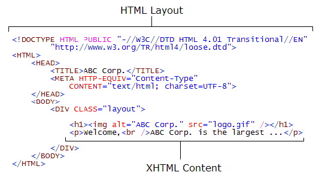

References- refer to other documents -images and videos
Links - connect to other locations
Tag - An HTML tag is always contained with angled brackets
Element - An HTML element refers to everything within a set of
opening and closing tags
Attribute - This is a property of an HTML element
The "b" tag is Bold
The "em" tag is Emphasis is italics
Hyperlinks use "anchors" are for connecting links with an HREF
attribue
Images use "img" to connect pictures with an SRC attribute (also
gives the pic a name)
Line breaks "br"add a an empty row called a void.: INLINE ends a
line
A paragraph "p" is used for content and will not leave a void:
BLOCK contains height and length
The "span"equals inline
The infamous"div" createsa a block. This is how you separate
sections on a page.
Use "doctype to define the type of document being used
The "html" tells the browser how to interpret the page/li>
The "head" tag contains Metadata, Javascript and CSS. It also
contains "title" which displays the page name
The "body" tag holds everything else on your web page which is our
main focus!
CSS
HTML stands for Hypertext Markup Language. Its a language
with syntax and rules. HTML documents form the majority of the content on the
web. HTML documents contain text content which describes
"what you see" and markup which describes "how it looks". w3schools.com has
every reference needed.
Tags and Elements
HTML documents are made of HTML elements. When writing
HTML, we tell browsers the type of each element by using HTML
tags. 
DOM
The DOM stands for Document Object Model. The Document Object
Model is a platform- and language-neutral interface that will allow programs and
scripts to dynamically access and update the content, structure and style of
documents. The document can be further processed and the results of that
processing can be incorporated back into the presented page.
To render a document such as an HTML page, most web browsers use an internal
model similar to the DOM. The nodes of every document are organized in a tree
structure, called the DOM tree, with topmost node named "Document object". When
an HTML page is rendered in browsers, the browser downloads the HTML into local
memory and automatically parses it to display the page on screen.
Inline vs Block Elements
HTML elements are either inline or block.
Block elements form an "invisible box" around the content inside of them.
All elements are rectangular.
Work Session 2: Creating a Structured Document with HTML
Developer Tools (in the Browser)
HTML elements are either inline or block. Block
elements form an "invisible box" around the content inside of them.
Search and Replace
You can also think about CSS as a search and replace tool: you
identify a class or a tag of the element you want to find (or match, in CSS
terminology), and then what you want to do with it, or what property values to
replace with different one
Order Matters
It also
matters where you define the rules and in what order they are applied. Styles
can be defined in different places and are applied in the following order, with
definitions further down the list overwriting previous definitions:
the default style of a browser (different browsers have slightly different
styles)
stylesheet in a separate file (this is what you will be mostly using)
stylesheet inside HTML (this can be done for small projects but is not
ideal)
inline style in an element (this can also be done but should be
avoided)
Specifics Matter
"Cascading" means that rules are applied not only to the elements
they directly match, but also to all of those elements' child elements. However,
if a child element has multiple, overlapping rules defined for it, the more
specific rule takes effect.
Repetition
One of the principles of programming is "Don't Repeat Yourself"
(DRY). Repetition only clutters your code and makes it difficult for the next
programmer to debug it. Selectors are what allows you to target specifc
HTML elements and apply style to them. By doing this, you can condense your CSS
to avoid unnecessary repetition, which waste time, and time is precious.
Work Session 3: Adding CSS Style to HTML Structure
The Box Model
HTML elements are boxes with the following components: 1.
Margin - transparent space between boxes around Border 2. Border -
outside of Padding and Content (uses color property of the box) 3.
Padding - space inside box to protect Content (uses background color of the box)
4. Content - Image or Text, sits at center protected by other layers
Box Sizing
There are two techniques to size boxes 1. Set sizes in
terms of percents rather than values 2. Easy layout codes
(box-sizing: border-box;)
Adapt to all Browsers
Chome -webkit-box-sizing: border-box;
Firefox -moz-box-sizing: border-box;
"IE" -ms-box-sizing: border-box;
Box Positioning
Divs are block elements (as opposed to Inline) and take up the entire
page width by default. Use the Flex Box code to allow Divs to appear next to
each other.
Flex Box
A flexible box to lay out, align and distribute space among items
in a div or container.
Flex Box Example element.style {display: flex;}
STAGE 2: AUTOMATE YOUR PAGE
Intro to Serious Programming
What is Programming
Computers are machines that must be told what to do. As a programmer
your job will be to write programs to tell the computer what to do.
Programming is the core of computer science. A program describes the
sequence of steps to complete an action. A programming
language is a rule based set of instructions. The computer uses a compiler to
interpret this and execute it. Examples of programming languages are Python,
C++, JavaScript and Ruby on Rails. Python will be taught in
this class. Once the code is written, it must run through a Python Interpreter
to covert it into computer instructions. If programming
grammar is not followed, the interpreter will return a syntax error; this means
the structure of the code is inconsistent with the rules of the programming
language. Backus-Naur Form is used to describe a programming language in a
simple and concise manner.
Expressions
An expression is something that has a value. Expressions are not to
be confused with equations. Below are some examples of expressions in Python:
3
1 + 1
7 * 7 * 24 * 60
Debugging
Debugging is a methodical process of finding and reducing the number of
defects in a computer program. The trick is to develop a way of finding and
fixing them.
Variables and Strings
Variables
What is a variable? A variable gives a name to a value. If
the variable 'X'=1 then the Python statement is: print X + X, then
the result would be '2'.
What does it mean to assign a value to a variable?
What is the difference between what the equals = means in math versus in
programming.
What's the difference between this: 2 + 3 = 5 and this: my_variable =
5?
Strings
A string is a sequence of charactrers surrounded by quotes.
Input->Function->Output
A function is a piece of code in a program. The function performs a specific
task. The advantages of using functions are:
Reducing duplication of code
Decomposing complex problems into simpler pieces
Improving clarity of the code
Reuse of code
Information hiding
Functions in Python are first-class
citizens. It means that functions have equal status with other objects in
Python. Functions can be assigned to variables, stored in collections or passed
as arguments. This brings additional flexibility to the language.
Input On the first line of
your function definition.. You must begin the line with def
(lowercase). After def you must give a function name (in this case it
will be udacify. Next, you must have a set of parentheses with the
required parameters inside. The line must end with a : colon.
Function In the body of the
function Every line in the function must be indented. If
you want your function to produce output, it must end with a return statement.
To "call" the function... "Calling" a function
just means using it. You do this by writing: The function name, followed
by... ...an open paren (, followed by... ...the values for the
required parameters, followed by...
Output To display the
results of a function call. Don't forget to include the print
command before you call your function if you want to display the result on your
screen!
Decisions and Repetition: If and While
Making Decisions
Python offers lots of operators to make comparisons:
Less than is <
Greater than is >
Less than or equal is <=
Not equal is !=
Equality comparison is == because assignment is =
IF
We use IF to make comparisons. if
<TestExpression> <block> def absolute(x): ***defines the procedure 'absolute' and takes 1 input which is a
number*** if x<0:
***inside the body of 'absolute' we'll use an IF statement to test if the value
of 'X' is less than 0*** x=-x
***this is the block, it changes the value of 'X' to
'-X'*** return x ***gives us the absolute value of the number that is passed
in***
OR
<1st_Expression> or <2nd_Expression> If the first
expression evaluates to True, the value is True and the second expression is not
evaluated. If the first expression is false, then the second
expression is evaluated.
Example 1
def is_friend(name): return
name[0] == 'D' or name[0] == 'R' ***compares the first
field of two expressions*** print True or
False
Example 2
def is_friend(name): return
name[0] == 'D' or name[0] == 'R' print True or
False
def biggest(a,b,c): if
a>b: if a>c: ***indented will allow it to be part of the
comparison*** return a else: return c else:
***this indentation matches the first
line*** if b>c: return b else: return
c
Loops
while
<TestExpression>: <block>
***test over and over until false***
if
<TestExpression>: <block>
***0 or 1 times***
Example
def print_numbers(n): i=0 ***initalize
the variable 'i'*** while i<10:***while and the test expression*** print i***if expression is true then enter
the block*** i=i+1***this is the assigment use if expression is
True*** ***if false then start the
next expression in that indentation***
Structured Data: Lists and For Loops
Lists - a new way to store data in a more structured object
For Loops - new type of loop to iterate over structured data
Structured Data:
String data type - a sequence of ONLY characters (surrounded by single or
double quotes)
List data type - sequence of ANYTHING numbers, characters, other lists!!!
Use square brackets
mixed up = ['apple', 3, 'oranges', 27, [1,2, ['alpha',
'beta']]]
Mutations
Only supported by Lists, not Strings
Lists support mutations
Mutations allow you to modify a value in the variable
Aliasing - You can assign different names to a Variable
List Operations
Append - updates a list with a new element
Plus - similar to concatenation for strings. It doesn't mutate but it
produces a new list
Len - all elements are counted
Length and Plus - stands for length and outputs the number of elements
in the input
Length and Append - elements and appended lists are counted (elements
inside the list aren't counted)
Loops on Lists
While Loops
while <Test>: ***'while'
followed by a 'test' expression, if true then execute the following block
statements*** <block>: ***keep executing the block as long as the 'test' is
true***
Example
def print_all_elements(p): i=0 ***introduce a variable named 'i' and initialize it's value to
'0'*** while i<len(p)-1:***use
'i' to index through the elements of that list*** print p[i]***for each element we'll print out
that value*** i-i+1***increase 'i' + 1***
For Loops
for <name> in <list>: ***similar to While and If statement*** <block> def print_all_elements(p): for e in p: print e
Example
def sum_list(x):***define sum_list with
'x'*** tracker = 0***use the variable 'tracker' to keep track of the sum so
far*** for y in x:***use a for loop to go through the elements of
'x'*** result = result + y***add
that value to 'result'*** return
result
STAGE 3: PROGRAM WITH OBJECTS
OBJECT ORIENTED PROGRAMMING
OOP is a fancy name for programming languages that use objects. It's a programming language model organized around objects rather than "actions" and data rather than logic. The course so far has taught us programming is a logical procedure that takes input data, processes it, and produces output data.
OOP will help us concentrate on the things we want to program (hence objects) and not just how to write the logic.
Previously we concentrated on Functions. def was used to define functions because we were concerned with the definiton of things.
Now we want to logically group data and functions by using class to define a class.
Examples of objects range from tax forms (described by SS#, Adjusted Gross Income, Taxable Income) to humans marked by name, address and phone numbers.
The first step in OOP is to identify all the objects the programmer wants to manipulate and how they relate to each other, an exercise often known as data modeling.
Once an object has been identified, it is generalized as a class of objects (an example is a blueprint which is the design for all buildings). This class defines the kind of data it contains and any logic sequences that can manipulate it (room size, floors and stairs).
The class Turtle contains info like move forward, back, etc. We used that class to create instances named Brad and Angie.
Each distinct logic sequence is known as a method. Objects communicate with well-defined interfaces called messages.
It turns out Object-oriented programming can make my future career easier as a programmer. So now I can produce more work by reusing code that fits related projects.
Here's how:
The concept of a data class makes it possible to define subclasses of data objects that share some or all of the main class characteristics. Called inheritance, this property of OOP forces a more thorough data analysis, reduces development time, and ensures more accurate coding.
Since a class defines only the data it needs to be concerned with, when an instance of that class (an object) is run, the code will not be able to accidentally access other program data. This characteristic of data hiding provides greater system security and avoids unintended data corruption.
The definition of a class is reuseable not only by the program for which it is initially created but also by other object-oriented programs (and, for this reason, can be more easily distributed for use in networks). The concept of data classes allows a programmer to create any new data type that is not already defined in the language itself.
So we built the class Movie to contain basic metadata that applies to all movies. I can reuse my class over and over with the init to intialize the object and self to create the instance to apply my movie intstructions on.
Just as style properties cascade in CSS, class methods and properties 'cascade' down to derived classes. OOP is the sliced bread of programming!!!
OOP AND SCALABILITY
Object-oriented programming has demonstrated its superiority over procedural programming as an architecture choice in several programming languages. It encourages cleaner interfaces between sections of the code, it is easier to debug, and it scales better for large programming teams. It's a very valuable tool for large programming projects.
Object-oriented programming is claimed to promote greater flexibility and maintainability in programming, and is widely popular in large-scale software engineering. Furthermore, proponents of OOP claim that OOP is easier to learn for those new to computer programming than previous approaches, and that the OOP approach is often simpler to develop and to maintain, lending itself to more direct analysis, coding, and understanding of complex situations and procedures than other programming methods.
FUNCTIONS
What is Abstraction
The hiding of detail behind documentation. Programmers write code in
the Python language which calls complex levels of functionality behind the
scenes.
Why use Functions
Functions do 3 things:
They name pieces of code the way variables name strings and numbers.
They take arguments the way your scripts take argv.
Using 1 and 2 they let you make your own "mini-scripts" or "tiny commands."
So far we've been writing a lot of functions. This is essentially
writing code one at a time.
some_module.py***We create an empty python
file*** def do.this***Then we add a function*** def
do.that***Then we add another
function*** return result
Python Standard Library Functions
Webbrowser - This module provides a high-level interface to allow displaying Web-based documents to users
Time - This module provides various time-related functions
Project example: Take a Break
This code will use the Time and Webbrowser modules and uses the follwoing funtions:
time.sleep - will suspend execution for a given number of seconds
time.ctime - gives the current time of the computer
OS - This module provides a portable way of using operating system dependent funtionality
Project example: Secret Message
This code will get the file names and rename each one
os.listdir - returns a list containing the names of the entries in the directory given by path. The list is in arbitrary order. It does not include the special entries '_' and "__" even if they are present in the directory.
os.getcwd - returns a string representing the current working diretory
os.rename - renames the file or directory
os.chdir - this will change the current working directory to path
Turtle - Inside of the file 'turtle' is a class called Turtle.
It's a neatly packaged box that puts things together very well.
turtle.Turtle()
This the function init which stands for initialize. It creates space in memory for a new instance or object of the class turtle.
CLASSES
A Class is a template that can be reused.
What is the Python FROM? - For importing a specific variable, class or a function from a module
What is a CLASS? - A class is something that just contain the
structure (how something should be loading out or structured)
What is an instance of a CLASS? - Since the class doesn't fill in any
content, instances contain the classes content
Analogy to explain Classes: - Everybody has to fill out a tax form but
the content they put in it differs from person to person. A class is like the
form: it specifies what content should exist. Your copy of the form with your
specific information if like an instance of the class: it specifies what the
content actually is (hence your AGI and what you pay the government).
Class is like a blueprint. A blueprint of a building contains info like
height and width of walls. We can use one blueprint to build several buildings
(instances or objects).
The class Turtle contains info like move forward, back, etc. We used that
class to create instances named Brad and Angie.
The class Movie (used in following project) needs data (title, storyline, poster image, trailer
link).
It is good practice to create class definition in one file and call/use it
from another file.
Project example: Make Classes Movie Website
This project has a file called media. Inside this file is a defined a class called Movie. The code media.Movie(): calls the init function to construct space.
The code media.Movie(): calls the init function to construct space.
The movies will be the Instance
The init function will be constructed
The self object being created is the movie
Unique instant variables are represented for each class (ex. title, storyline, poster_image_url and trailer_youtube_url)
Instant methods are defined for each class and associated to an instance
We'll use webbrowser.open to play the YouTube trailers
OBJECT ORIENTED TERMINOLOGY
Object - Refers to a particular instance of a class where the object can be a combination of variables, functions, and data structures.
Class - A user-defined prototype for an object that defines a set of attributes that characterize any object of the class. The attributes are data members (class variables and instance variables) and methods, accessed via dot notation.
Instance - An object of a class. Class is to a recipe as instance is to the cake from that recipe.
Constructor - Constructs the init functions
Self - Is the object being created (the movie)
Method - A special kind of function that is defined in a class definition.
Instant Method - A function that is defined inside a class and is associated with an instance
Module - The file containing Python definitions and statements. The file name will have the suffic .py appended.
Library - Bible to all things Python including modules such as webbrowser, time, os, turtle and many many more.
Class Variable - A variable that is shared by all instances of a class. Class variables are defined within a class but outside any of the class's methods. Class variables are not used as frequently as instance variables are.
Instance Variable - A variable that is defined inside a method and belongs only to the current instance of a class. This makes it unique to each instance of class (movie project ex. title, storyline, poster_image_url and trailer_youtube_url)
Inheritance - The transfer of the characteristics of a class to other classes that are derived from it.
Method Overriding - ability of a class to change the implementation of a method provided by one of its ancestors. Overriding is a very important part of OOP since it is the feature that makes inheritance exploit its full power. Through method overriding a class may "copy" another class, avoiding duplicated code, and at the same time enhance or customize part of it. Method overriding is thus a strict part of the inheritance mechanism.